- 00 开篇词 迎难而上，做云原生时代的弄潮儿.md.html
- 00 课前准备 动手实践才是最好的学习方式.md.html
- 01 初识容器：万事开头难.md.html
- 02 被隔离的进程：一起来看看容器的本质.md.html
- 03 容器化的应用：会了这些你就是Docker高手.md.html
- 04 创建容器镜像：如何编写正确、高效的Dockerfile.md.html
- 05 镜像仓库：该怎样用好Docker Hub这个宝藏.md.html
- 06 打破次元壁：容器该如何与外界互联互通.md.html
- 07 实战演练：玩转Docker.md.html
- 08 视频：入门篇实操总结.md.html
- 09 走近云原生：如何在本机搭建小巧完备的Kubernetes环境.md.html
- 10 自动化的运维管理：探究Kubernetes工作机制的奥秘.md.html
- 11 YAML：Kubernetes世界里的通用语.md.html
- 12 Pod：如何理解这个Kubernetes里最核心的概念？.md.html
- 13 Job_CronJob：为什么不直接用Pod来处理业务？.md.html
- 14 ConfigMap_Secret：怎样配置、定制我的应用.md.html
- 15 实战演练：玩转Kubernetes（1）.md.html
- 16 视频：初级篇实操总结.md.html
- 17 更真实的云原生：实际搭建多节点的Kubernetes集群.md.html
- 18 Deployment：让应用永不宕机.md.html
- 19 Daemonset：忠实可靠的看门狗.md.html
- 20 Service：微服务架构的应对之道.md.html
- 21 Ingress：集群进出流量的总管.md.html
- 22 实战演练：玩转Kubernetes（2）.md.html
- 23 视频：中级篇实操总结.md.html
- 24 PersistentVolume：怎么解决数据持久化的难题？.md.html
- 25 PersistentVolume + NFS：怎么使用网络共享存储？.md.html
- 26 StatefulSet：怎么管理有状态的应用？.md.html
- 27 滚动更新：如何做到平滑的应用升级降级？.md.html
- 28 应用保障：如何让Pod运行得更健康？.md.html
- 29 集群管理：如何用名字空间分隔系统资源？.md.html
- 30 系统监控：如何使用Metrics Server和Prometheus？.md.html
- 31 网络通信：CNI是怎么回事？又是怎么工作的？.md.html
- 32 实战演练：玩转Kubernetes（3）.md.html
- 33 视频：高级篇实操总结.md.html
- 加餐 docker-compose：单机环境下的容器编排工具.md.html
- 加餐 谈谈Kong Ingress Controller.md.html
- 结束语 是终点，更是起点.md.html
- 捐赠
09 走近云原生：如何在本机搭建小巧完备的Kubernetes环境
你好，我是Chrono。
在前面的“入门篇”里，我们学习了以Docker为代表的容器技术，做好了充分的准备，那么今天我们就来看看什么是容器编排、什么是Kubernetes，还有应该怎么在自己的电脑上搭建出一个小巧完善的Kubernetes环境，一起走近云原生。
什么是容器编排
容器技术的核心概念是容器、镜像、仓库，使用这三大基本要素我们就可以轻松地完成应用的打包、分发工作，实现“一次开发，到处运行”的梦想。
不过，当我们熟练地掌握了容器技术，信心满满地要在服务器集群里大规模实施的时候，却会发现容器技术的创新只是解决了运维部署工作中一个很小的问题。现实生产环境的复杂程度实在是太高了，除了最基本的安装，还会有各式各样的需求，比如服务发现、负载均衡、状态监控、健康检查、扩容缩容、应用迁移、高可用等等。
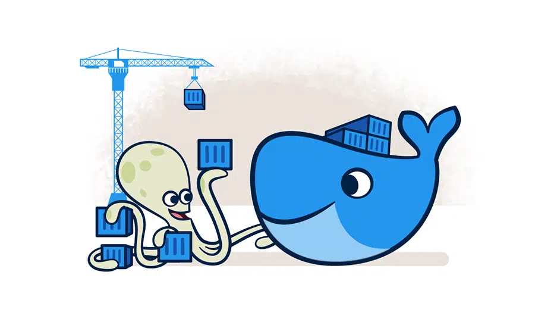
虽然容器技术开启了云原生时代，但它也只走出了一小步，再继续前进就无能为力了，因为这已经不再是隔离一两个进程的普通问题，而是要隔离数不清的进程，还有它们之间互相通信、互相协作的超级问题，困难程度可以说是指数级别的上升。
这些容器之上的管理、调度工作，就是这些年最流行的词汇：“容器编排”（Container Orchestration）。
容器编排这个词听起来好像挺高大上，但如果你理解了之后就会发现其实也并不神秘。像我们在上次课里使用Docker部署WordPress网站的时候，把Nginx、WordPress、MariaDB这三个容器理清次序、配好IP地址去运行，就是最初级的一种“容器编排”，只不过这是纯手工操作，比较原始、粗糙。
面对单机上的几个容器，“人肉”编排调度还可以应付，但如果规模上到几百台服务器、成千上万的容器，处理它们之间的复杂联系就必须要依靠计算机了，而目前计算机用来调度管理的“事实标准”，就是我们专栏的主角：Kubernetes。
什么是Kubernetes
现在大家谈到容器都会说是Docker，但其实早在Docker之前，Google在公司内部就使用了类似的技术（cgroup就是Google开发再提交给Linux内核的），只不过不叫容器。
作为世界上最大的搜索引擎，Google拥有数量庞大的服务器集群，为了提高资源利用率和部署运维效率，它专门开发了一个集群应用管理系统，代号Borg，在底层支持整个公司的运转。
2014年，Google内部系统要“升级换代”，从原来的Borg切换到Omega，于是按照惯例，Google会发表公开论文。
因为之前在发表MapReduce、BigTable、GFS时吃过亏（被Yahoo开发的Hadoop占领了市场），所以Google决定借着Docker的“东风”，在发论文的同时，把C++开发的Borg系统用Go语言重写并开源，于是Kubernetes就这样诞生了。
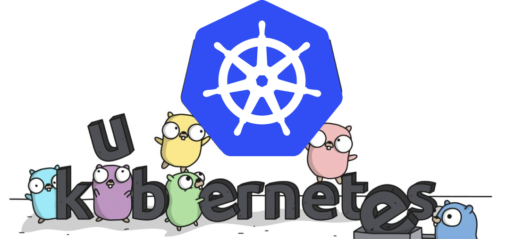
由于Kubernetes背后有Borg系统十多年生产环境经验的支持，技术底蕴深厚，理论水平也非常高，一经推出就引起了轰动。然后在2015年，Google又联合Linux基金会成立了CNCF（Cloud Native Computing Foundation，云原生基金会），并把Kubernetes捐献出来作为种子项目。
有了Google和Linux这两大家族的保驾护航，再加上宽容开放的社区，作为CNCF的“头把交椅”，Kubernetes旗下很快就汇集了众多行业精英，仅用了两年的时间就打败了同期的竞争对手Apache Mesos和Docker Swarm，成为了这个领域的唯一霸主。
那么，Kubernetes到底能够为我们做什么呢？
简单来说，Kubernetes就是一个生产级别的容器编排平台和集群管理系统，不仅能够创建、调度容器，还能够监控、管理服务器，它凝聚了Google等大公司和开源社区的集体智慧，从而让中小型公司也可以具备轻松运维海量计算节点——也就是“云计算”的能力。
什么是minikube
Kubernetes一般都运行在大规模的计算集群上，管理很严格，这就对我们个人来说造成了一定的障碍，没有实际操作环境怎么能够学好用好呢？
好在Kubernetes充分考虑到了这方面的需求，提供了一些快速搭建Kubernetes环境的工具，在官网（https://kubernetes.io/zh/docs/tasks/tools/）上推荐的有两个：kind和minikube，它们都可以在本机上运行完整的Kubernetes环境。
我说一下对这两个工具的个人看法，供你参考。
kind基于Docker，意思是“Kubernetes in Docker”。它功能少，用法简单，也因此运行速度快，容易上手。不过它缺少很多Kubernetes的标准功能，例如仪表盘、网络插件，也很难定制化，所以我认为它比较适合有经验的Kubernetes用户做快速开发测试，不太适合学习研究。
不选kind还有一个原因，它的名字与Kubernetes YAML配置里的字段 kind 重名，会对初学者造成误解，干扰学习。
再来看minikube，从名字就能够看出来，它是一个“迷你”版本的Kubernetes，自从2016年发布以来一直在积极地开发维护，紧跟Kubernetes的版本更新，同时也兼容较旧的版本（最多只到之前的6个小版本）。
minikube最大特点就是“小而美”，可执行文件仅有不到100MB，运行镜像也不过1GB，但就在这么小的空间里却集成了Kubernetes的绝大多数功能特性，不仅有核心的容器编排功能，还有丰富的插件，例如Dashboard、GPU、Ingress、Istio、Kong、Registry等等，综合来看非常完善。
所以，我建议你在这个专栏里选择minikube来学习Kubernetes。
如何搭建minikube环境
minikube支持Mac、Windows、Linux这三种主流平台，你可以在它的官网（https://minikube.sigs.k8s.io）找到详细的安装说明，当然在我们这里就只用虚拟机里的Linux了。
minikube的最新版本是1.25.2，支持的Kubernetes版本是1.23.3，所以我们就选定它作为我们初级篇的学习工具。
minikube不包含在系统自带的apt/yum软件仓库里，我们只能自己去网上找安装包。不过因为它是用Go语言开发的，整体就是一个二进制文件，没有多余的依赖，所以安装过程也非常简单，只需要用curl或者wget下载就行。
minikube的官网提供了各种系统的安装命令，通常就是下载、拷贝这两步，不过你需要注意一下本机电脑的硬件架构，Intel芯片要选择带“amd64”后缀，Apple M1芯片要选择“arm64”后缀，选错了就会因为CPU指令集不同而无法运行：
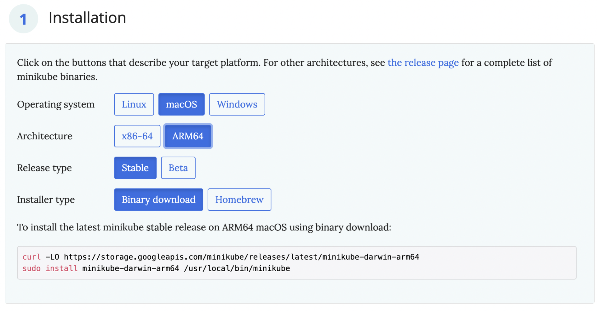
我也把官网上Linux系统安装的命令抄在了这里，你可以直接拷贝后安装：
# Intel x86_64
curl -Lo minikube https://storage.googleapis.com/minikube/releases/latest/minikube-linux-amd64
# Apple arm64
curl -Lo minikube https://storage.googleapis.com/minikube/releases/latest/minikube-linux-arm64
sudo install minikube /usr/local/bin/
安装完成之后，你可以执行命令 minikube version，看看它的版本号，验证是否安装成功：
minikube version
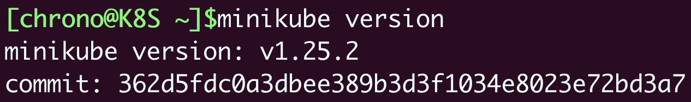
不过minikube只能够搭建Kubernetes环境，要操作Kubernetes，还需要另一个专门的客户端工具“kubectl”。
kubectl的作用有点类似之前我们学习容器技术时候的工具“docker”，它也是一个命令行工具，作用也比较类似，同样是与Kubernetes后台服务通信，把我们的命令转发给Kubernetes，实现容器和集群的管理功能。
kubectl是一个与Kubernetes、minikube彼此独立的项目，所以不包含在minikube里，但minikube提供了安装它的简化方式，你只需执行下面的这条命令：
minikube kubectl
它就会把与当前Kubernetes版本匹配的kubectl下载下来，存放在内部目录（例如 .minikube/cache/linux/arm64/v1.23.3），然后我们就可以使用它来对Kubernetes“发号施令”了。
所以，在minikube环境里，我们会用到两个客户端：minikube管理Kubernetes集群环境，kubectl操作实际的Kubernetes功能，和Docker比起来有点复杂。
我画了一个简单的minikube环境示意图，方便你理解它们的关系。
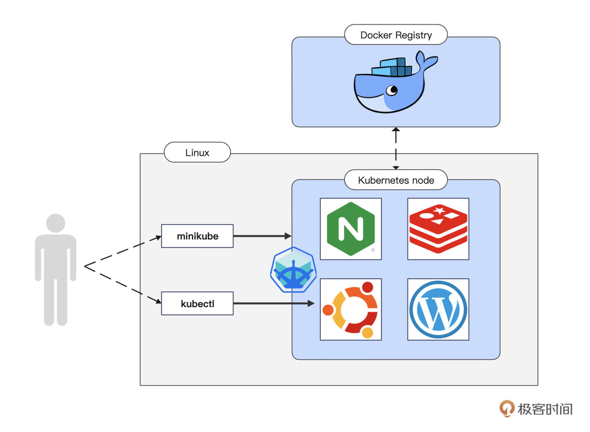
实际验证minikube环境
前面的工作都做完之后，我们就可以在本机上运行minikube，创建Kubernetes实验环境了。
使用命令 minikube start 会从Docker Hub上拉取镜像，以当前最新版本的Kubernetes启动集群。不过为了保证实验环境的一致性，我们可以在后面再加上一个参数 --kubernetes-version，明确指定要使用Kubernetes版本。
这里我使用“1.23.3”，启动命令就是：
minikube start --kubernetes-version=v1.23.3
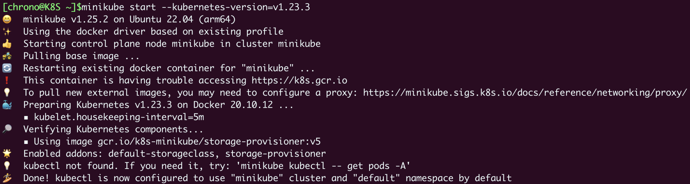
（它的启动过程使用了比较活泼的表情符号，可能是想表现得平易近人吧，如果不喜欢也可以调整设置关闭它。）
现在Kubernetes集群就已经在我们本地运行了，你可以使用 minikube status、minikube node list这两个命令来查看集群的状态：
minikube status
minikube node list
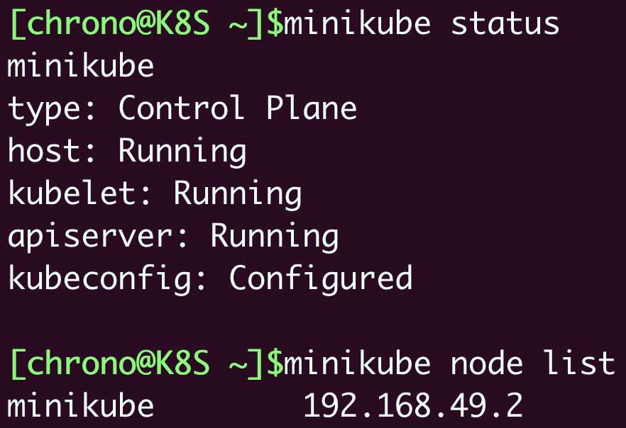
从截图里可以看到，Kubernetes集群里现在只有一个节点，名字就叫“minikube”，类型是“Control Plane”，里面有host、kubelet、apiserver三个服务，IP地址是192.168.49.2。
你还可以用命令 minikube ssh 登录到这个节点上，虽然它是虚拟的，但用起来和实机也没什么区别：
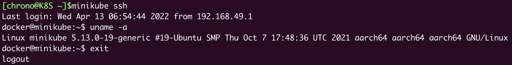
有了集群，接下来我们就可以使用kubectl来操作一下，初步体会Kubernetes这个容器编排系统，最简单的命令当然就是查看版本：
kubectl version
不过这条命令还不能直接用，因为使用minikube自带的kubectl有一点形式上的限制，要在前面加上minikube的前缀，后面再有个 --，像这样：
minikube kubectl -- version
为了避免这个不大不小的麻烦，我建议你使用Linux的“alias”功能，为它创建一个别名，写到当前用户目录下的 .bashrc 里，也就是这样：
alias kubectl="minikube kubectl --"
另外，kubectl还提供了命令自动补全的功能，你还应该再加上“kubectl completion”：
source <(kubectl completion bash)
现在，我们就可以愉快地使用kubectl了：
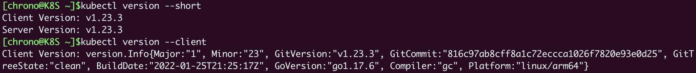
下面我们在Kubernetes里运行一个Nginx应用，命令与Docker一样，也是 run，不过形式上有点区别，需要用 --image 指定镜像，然后Kubernetes会自动拉取并运行：
kubectl run ngx --image=nginx:alpine
这里涉及Kubernetes里的一个非常重要的概念：Pod，你可以暂时把它理解成是“穿了马甲”的容器，查看Pod列表需要使用命令 kubectl get pod，它的效果类似 docker ps：
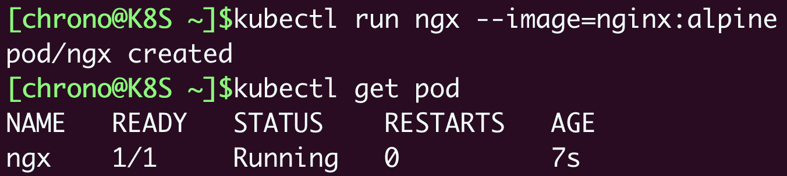
命令执行之后可以看到，在Kubernetes集群里就有了一个名字叫ngx的Pod正在运行，表示我们的这个单节点minikube环境已经搭建成功。
小结
好了，今天我们先了解了容器编排概念和Kubernetes的历史，然后在Linux虚拟机上安装了minikube和kubectl，运行了一个简单但完整的Kubernetes集群，实现了与云原生的“第一次亲密接触”。
那什么是云原生呢？这在CNCF上有明确的定义，不过我觉得太学术化了，我也不想机械重复，就讲讲我自己的通俗理解吧。
所谓的“云”，现在就指的是Kubernetes，那么“云原生”的意思就是应用的开发、部署、运维等一系列工作都要向Kubernetes看齐，使用容器、微服务、声明式API等技术，保证应用的整个生命周期都能够在Kubernetes环境里顺利实施，不需要附加额外的条件。
换句话说，“云原生”就是Kubernetes里的“原住民”，而不是从其他环境迁过来的“移民”。
最后照例小结一下今天的内容：
- 容器技术只解决了应用的打包、安装问题，面对复杂的生产环境就束手无策了，解决之道就是容器编排，它能够组织管理各个应用容器之间的关系，让它们顺利地协同运行。
- Kubernetes源自Google内部的Borg系统，也是当前容器编排领域的事实标准。minikube可以在本机搭建Kubernetes环境，功能很完善，适合学习研究。
- 操作Kubernetes需要使用命令行工具kubectl，只有通过它才能与Kubernetes集群交互。
- kubectl的用法与docker类似，也可以拉取镜像运行，但操作的不是简单的容器，而是Pod。
另外还要说一下Kubernetes的官网（https://kubernetes.io/zh/），里面有非常详细的文档，包括概念解释、入门教程、参考手册等等，最难得的是它有全中文版本，我们阅读起来完全不会有语言障碍，希望你有时间多上去看看，及时获取官方第一手知识。
课下作业
最后是课下作业时间，给你留两个思考题：
- 你是怎么理解容器编排和Kubernetes的？它们应该能够解决什么问题？
- 你认为Kubernetes和Docker之间有什么区别？
欢迎积极留言参与讨论，觉得有收获也欢迎你转发给朋友一起学习，我们下节课见。
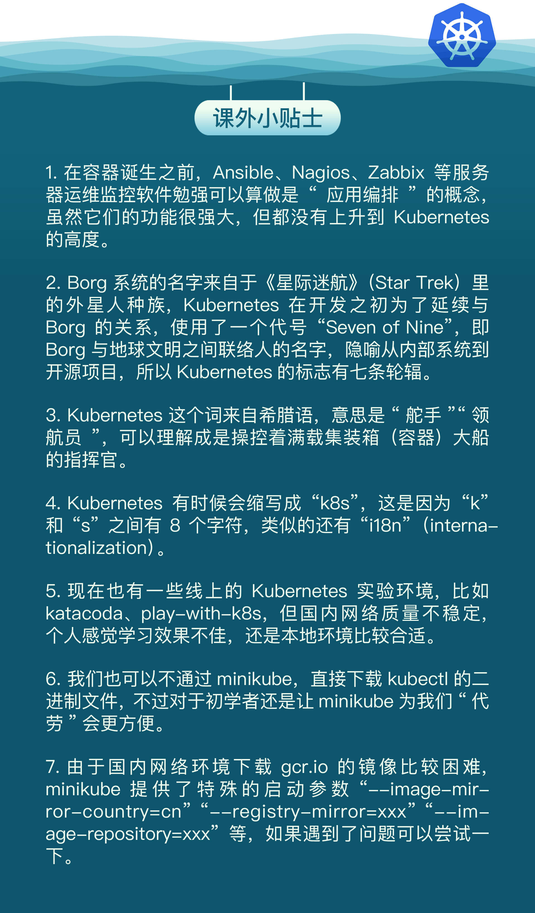
© 2019 - 2023 Liangliang Lee. Powered by gin and hexo-theme-book.